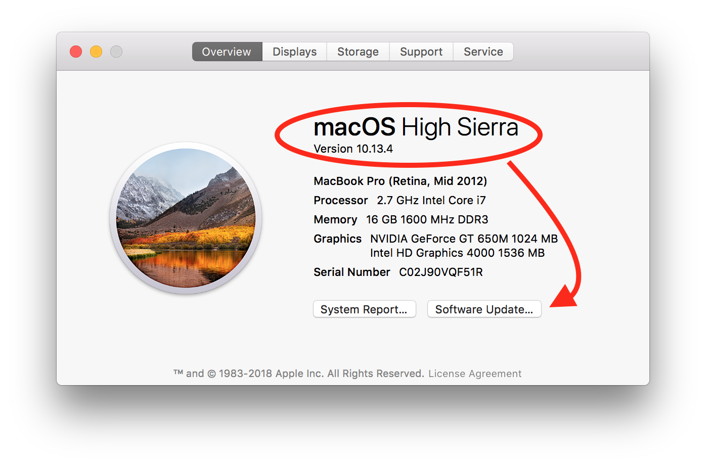
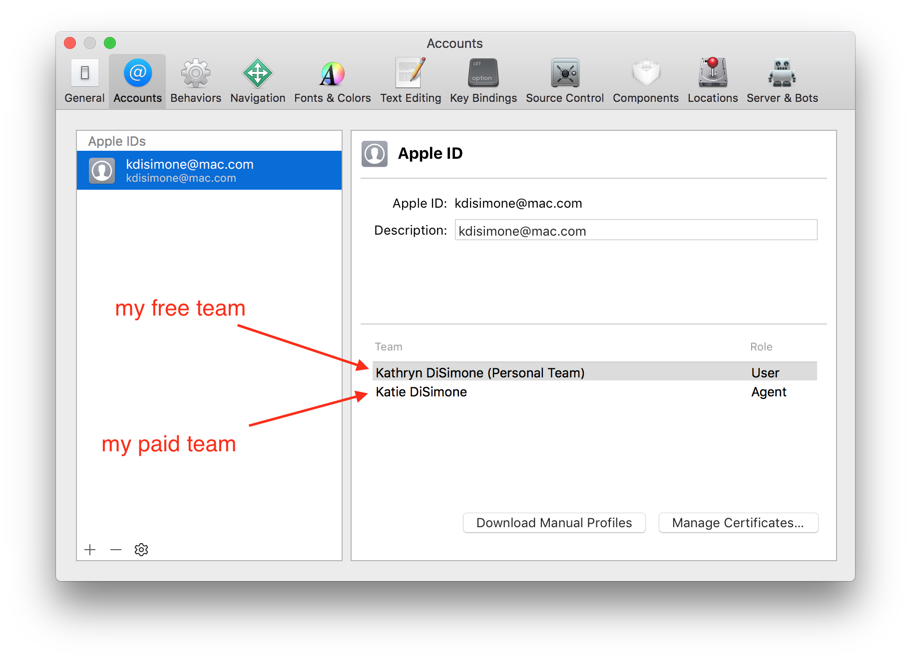
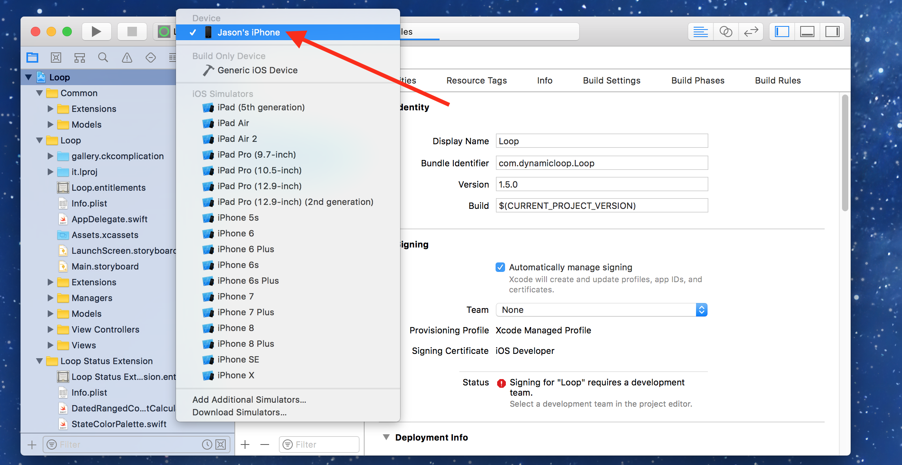
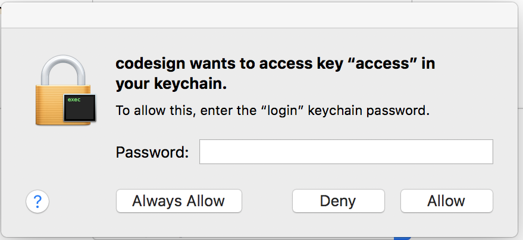
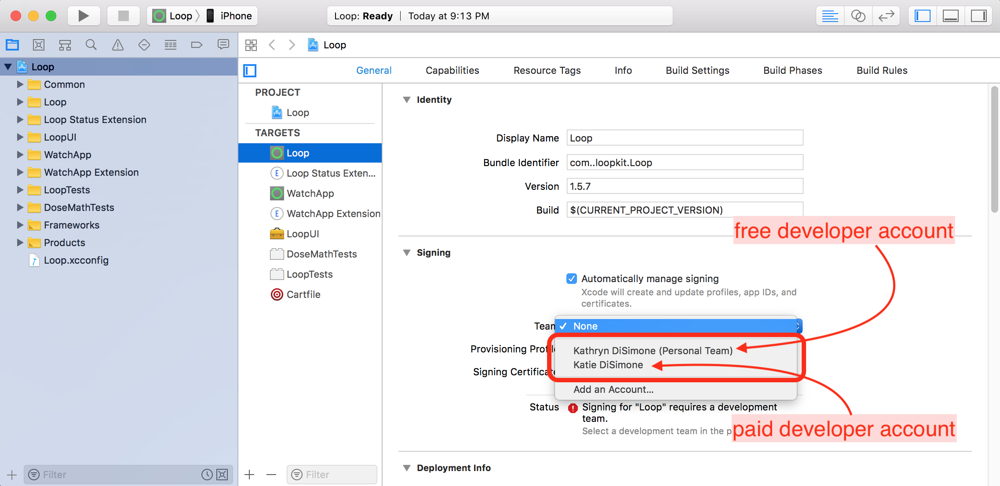
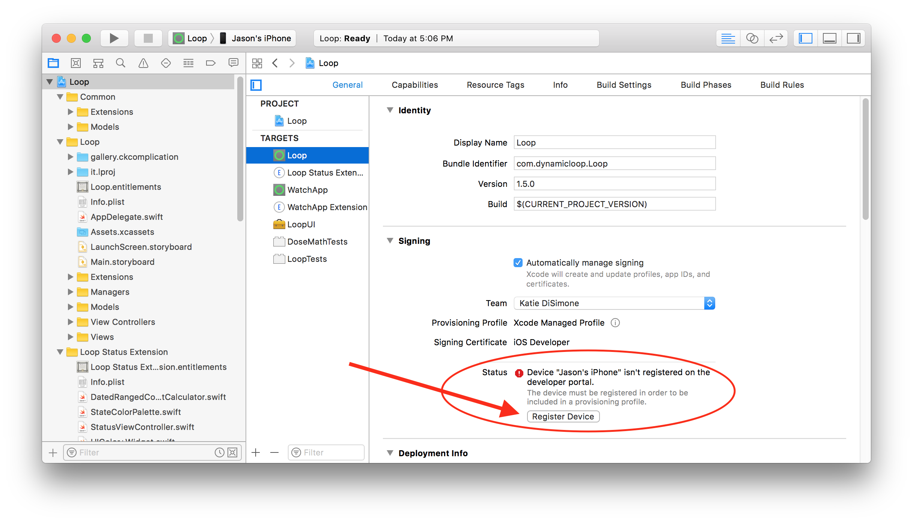

Overview⌁
The overall installation process is pretty simple. Loop is written in code that is stored online and available for free download. In order to compile all that code into a useable app, you need to use a free Apple program called Xcode. However, Apple is particular about apps and who can install custom apps on their devices, so you will have to enroll in Apple's Developer Program. Once you enroll as a developer, you will be able to "sign" the Loop app in Xcode so that it will properly install onto your iPhone.
While all of this is straight-forward...I'll tell you some hints upfront to save time.
- Check your watchOS, iPhone OS, macOS, Xcode first to see if they need updates. If you have iOS 12 (or newer), you will need at a minimum watchOS 4.3, macOS 10.13.6, and Xcode 10. If you have newer versions than the minimum, that is fine.
- Downloading Xcode can take hours depending on your internet connection speed. You can do that ahead of time if you want to save yourself some waiting when you're ready to build.
- Apple watches need to be paired with the iPhone BEFORE the Loop app is built onto the phone in order to have the Loop on the watch, too. If you pair a new Apple watch later, you'll have to rebuild the Loop app onto the iPhone again, before the watch will work with Loop functions.
Setup your Apple Computer⌁
Verify macOS⌁
You need to be running macOS 10.13.6 (High Sierra) or 10.14 (Mojave), so verify by clicking the apple logo in your computer display's upper left corner and selecting About this Mac.

If your macOS is not the minimum version, click on the Software Update button and update. If your computer is older than late 2009/2010 (depending on computer model), you may not be able to update sufficiently. You can check the latest macOS compatibility here.
Install Homebrew⌁
Homebrew is a program that will allow us to install the needed packages to build Loop. Open the Terminal application on your computer. It is located in the Applications folder, and then look in the Utilities subfolder for the Terminal application.
- Copy and paste the line below into Terminal prompt. Press return after you paste it in.
/usr/bin/ruby -e "$(curl -fsSL https://raw.githubusercontent.com/Homebrew/install/master/install)"
- There will be a prompt asking if you want to continue. Press return to continue, then it may prompt for your password. Enter your computer user password (don't worry, Terminal app doesn't show keystrokes when you enter passwords, but it is still reading your typing). Wait while the script does its thing...you’ll see info scroll by and then it will pause for awhile. Eventually, it will be done and you’ll see something that says “Installation successful” and you’ll have a ready Terminal prompt again.

You can close the Terminal application now. You’re done with it. You do not need to do these steps again for any subsequent Loop builds.
Setup your Apple Developer Account⌁
In order to build your own copy of the Loop app onto your iPhone, you will need an Apple developer account. You will have two options for your individual account; free or paid.
If you decide to use a FREE developer account, here's what you need to know:
- Loop apps signed with a free developer team will expire after 7 days. On the 7th day, your Loop app will simply turn white when you open it and then immediately close. To rebuild the Loop app, you will have to find a computer and rebuild the app onto your iPhone again. You cannot rebuild the app on day 5 (when it is convenient, for example)...hoping to reset the 7-day clock. The app will still expire on the 7th day from when it was first signed and created.
- If you decide to switch to a paid account after trying out the free account, you will need to rebuild your Loop app with a new main app bundle identifier (this will make sense when you go through the rest of these instructions...just make a mental note for now) and sign with the new team name.
If you decide to use a PAID developer account, here's what you need to know:
- Loop apps signed with a paid developer team will last for a full year.
- The paid developer account is $99 per year and is default set to auto-renew annually. You can change that selection in your developer account settings at any time.
- If your household has multiple Loop users, only one developer account is needed. That one developer account can be used to sign multiple Loop apps.
If you have decided to use the free developer account, you don't have to do anything right now. We will create it a little later in this process. However, if you've decided to use a paid developer account, go to the Apple Developer website to enroll in an individual account. (Note: The Apple ID you use to enroll in the developer program does not need to be the same Apple ID as the Loop iPhone uses, for example parent installing Loop on kid's iPhone. Typically for the developer enrollment, use the Apple ID of the person who will be doing the Loop app building.) After you enroll, make sure you look for a confirmation email. Apple says it can take up to 24 hours to confirm and setup a new Apple developer account, however some people have had the process only take minutes. It can vary.
Periodically, Apple will update the license agreement for the Developer Program. When that happens, you'll need to login to your developer account and accept the new license agreement before you can sign a new/updated Loop app again.
Setup Xcode⌁
Open the App Store application on your computer. Search for Xcode and click on the link to download/install Xcode for free. The most current version of Xcode is 10. The file size is fairly large so expect about 45 minutes, or even multiple hours, to download depending on your internet speed. If you have iOS 12, you will need version Xcode 10 at least to build the current Loop app. If you have a previous installation of Xcode, please make sure to check for updates first, before building Loop.

Once you have Xcode downloaded, open it from your Applications folder. There may be a short delay as Xcode installs new Command Line Tools that the app uses. Once Xcode is open and ready, we will start with adding your new developer account to Xcode.
IMPORTANT NOTES: Do not stop the installation of Command Line Tools, that is an important installation for Xcode to work properly. When the installation is done, please check that your Command Line Tools installed correctly by opening your Xcode preferences and checking the Locations tab to make sure you have Xcode 10 selected.

Go to the Xcode main menu (top left of your screen) and select Preferences from the Xcode dropdown menu. Then, click on the “Accounts” tab in the Preferences window and then press the + in the lower left corner to add an Apple ID account.

If you want to use a free developer account, you will simply enter your Apple ID in this section and Xcode will automatically enroll your Apple ID in the free developer program. If you enrolled in the paid account already, enter the Apple ID of the paid developer account. The screenshot below shows the labeling of team names based on whether from free account vs. paid account. Free teams will have (personal team) after the name.

Finally, we are going to turn on Line Numbers to make some later steps in the build process easier. Go to the "Text Editing" tab in the top of the Preferences window. Click the box to show line numbers.

You are now done setting up Xcode. Great job! You will not need to redo the account setup steps on any subsequent builds or updates of your Loop app. Xcode will remember these settings.
Download Loop Code⌁
Next, you’ll need to obtain the Loop code in order to build the app on your computer. Click on ONE of the links below to download your Loop source code. We recommend Master branch be used to build your Loop.
Loop: Master branch Loop: Dev branch
Master vs Dev? What is the difference? The Loop code resides in GitHub within a repository. A repository is kind of like a project's bookshelf, holding various books versions (aka branches) of a project. The master branch is considered a stable version. Any new features or options are first tested in a dev (short for "development") branch of the Loop. New or inexperienced users should not build from the dev branch of Loop, as there is a greater likelihood of encountering bugs or glitches. If you hear of "new features in dev", these are things that may be eventually merged into the master branch once any bugs are worked out.
IMPORTANT NOTES: Best practice is to leave your Loop code in your Downloads folder. If you store your Loop code a different folder than Downloads (such as your Documents folder or Desktop), make sure the specified folder is not an iCloud drive. Storing your Loop code in an iCloud drive folder will prevent Loop from building successfully. How do you know if a folder is an iCloud drive? Check your System Preferences. If your System Preferences for iCloud is set as shown below, your Documents and Desktop folders are iCloud drives and NOT appropriate places to save your Loop download.

Loop-master. HOWEVER, if you already have an existing Loop-master folder from a previous download, the name of the next download will be something like Loop-master (1). The problem with that folder name is that it contains a space...and spaces in the name will cause your Loop build to fail. So, either delete old copies of Loop before downloading/unzipping or rename the folder(s) to ensure that NO SPACES are in the folder name.

Installing Loop using Xcode⌁
Here’s where the fun really begins. You’re about to build your Loop app.
Go to your Downloads folder, open the Loop-master folder (or whatever you named it...double check that the folder does not contain any spaces in the folder name, as described above), and double click on Loop.xcodeproj.

A warning may appear asking if you really want to open it, click Open. Xcode will get itself organized and installed, this may take a few minutes.

Once Xcode has finished indexing, the Loop project's various folders and files will appear in the far left column (if you don't see the files/folders, click on the little blue folder icon at the top of that far left column). At the very top, click on the blue "Loop" at the top of the list. Then click on the box in the middle screen to reveal the targets column. The four targets we will sign in the upcoming steps are now easily viewable.

Connect your iPhone via cable to the computer, select your iPhone from the very top of the drop down list. Your iPhone’s personal name should be at the top of the list. Don't accidentally select the generic iOS simulators listed below your iPhone's name.
Helpful Tip
If your iPhone has a lock enabled, Xcode will not be able to install Loop app once your phone locks during the build progress. Please temporarily disable the lock until you finish building Loop app. Go to your iPhone Settings >> Display & Brightness >> Auto-Lock and set it to Never. You can reset your lock once Loop is done building onto the phone.


These next steps are usually only needed on the first Loop build; they can be skipped on subsequent builds.
- If this is the first time your iPhone has been plugged in to this computer, you will need to open the iPhone and select "Trust this Computer" before your device will be useable in the menu selection.
- If this is the first time you are building an app onto this iPhone using this particular Apple developer account, you will need to “register the device” to your developer account. The device registration screen, as shown below, may appear when your iPhone is selected. If these prompts for "register device" don't immediately appear, there will be a prompt later to register device. Either registration prompt, now or later, will work.


Once you select your device (your iPhone's name), we are ready to start signing the four targets. However, before we go any further, it is important to be ready for a codesign/keychain access prompt that you will see sometime soon during the subsequent steps. We are bringing it to your attention now so that you don't accidentally dismiss this too quickly.

This prompt above, when you see it, requires you to enter your computer password and then select "Always Allow". This prompt is a curious one though, and many times the prompt will ask several times in a row. In frustration, people think the prompt must be broken because it keeps reappearing and then people will press deny or cancel. Don't deny. Keep entering your computer password and pressing the Always Allow button...as many times as it takes. Eventually, the necessary amount of access points will be resolved and the prompt won't return again. This is only needed for first time Xcode users.
Now that we have that advisory out of the way, let's get back to signing those four targets. We will start with the Loop target, the first one on the target list. Under the "Signing" area, select the dropdown menu where it currently says "none". Choose your team that you'd like to sign with. If you select a team name with (personal team), your app will expire after 7 days. If you select a team name without that (personal team), your app will last a full year. If you never signed up for a free developer account, you will not have a (personal team) showing. Make sure you keep the "automatically manage signing" box checked above the team selection area.

Once you choose your signing team, Xcode will automatically generate provisioning profiles and signing certificates. If this is the first time you are building on this iPhone with this developer account, you may again be prompted to register the device. Simply click on the "Register Device" button to confirm.

A successfully signed target will have a provisioning profile and signing certificate similar to the screenshot below. Click on each of the three remaining targets, and repeat the signing steps by choosing the same team name as you selected in the first target.

Do you want customizations before you finish building?
New Loop users: Customizations are not a required part of any Loop build. As you gain experience in how you use your Loop app, you may want to customize some of the features. You can always update your Loop app to add customizations at a later time. Really though, building with the standard, default installation is JUST FINE. If you want any custom configurations to your Loop or Watch apps, now is the time to make them before you finish with the last step of Loop installation on your iPhone. Follow the step-by-step instructions on the Code Customizations page. When you’ve completed those customizations, please return here and follow the next steps to finish the installation of Loop.
Have you paired your Apple Watch already?
New Apple Watch users: If you have an unopened Apple watch and want to use it with Loop, first pair the watch with the iPhone before continuing to the next steps. If you get a new watch after building the Loop app, you'll need to redo your Loop build. (Don't worry, it's as easy as pressing play on your saved Loop project.) Existing Apple Watch users: Please update your watchOS prior to building Loop app. The current version of Loop requires watchOS 4 or newer.
All done with any customizations? Have your Apple watch paired and updated? Let’s finish the installation of the Loop app onto your iPhone. Double check to make sure your iPhone's name is still selected and then press the “play” button (or build button) to start Xcode on its way. You’ll see the progression of the build in the status window. New builds can take about 20-40 minutes depending on the speed of the computer and internet. Just be patient. Subsequent builds from the same download folder will be much faster.

If the build is successful, your brand new Loop app will have a screen open immediately on the iPhone asking about allowing Loop notifications and Health App access. Allow Loop to send you notifications. In the next screen that follows that, click on the Turn All Categories On line and then click Allow in the upper right corner.
If you get a message that your build failed, please review the Build Errors page. Read your error message(s), find the matching error in the Build Errors page, and follow the directions for repairing the error.
First time builders: If this is the first time you have installed an app on your iPhone using your developer account, you may get a warning like below. Don't worry, Loop installed on the phone but needs you to do an extra step on the phone before Loop app can open. Just follow the directions shown in the warning for what you need to do on your iPhone, and the issue resolves very quickly. Click ok and you can safely disconnect your iPhone from the computer. (If you don’t get a warning and the Loop app installs but does not open, you may still need to go to Settings->General->Device Management and enable trust for your Developer Account.)

CONGRATS! YOU JUST INSTALLED LOOP!
While the Loop app has been built...you are not done with these docs yet. There are valuable pieces of information you will need to read in order to get, and keep, your Loop working. Please continue on with the Loop App Setup section of these docs.
STOP...did you read that blue box above?
Are you tempted to just start pushing buttons in Loop since it looks so easy? PLEASE read about the Loop App Setup. There are four sections: Loop settings, Loop services, RileyLink menu, and Pump setup. All of them have very valuable information to read.